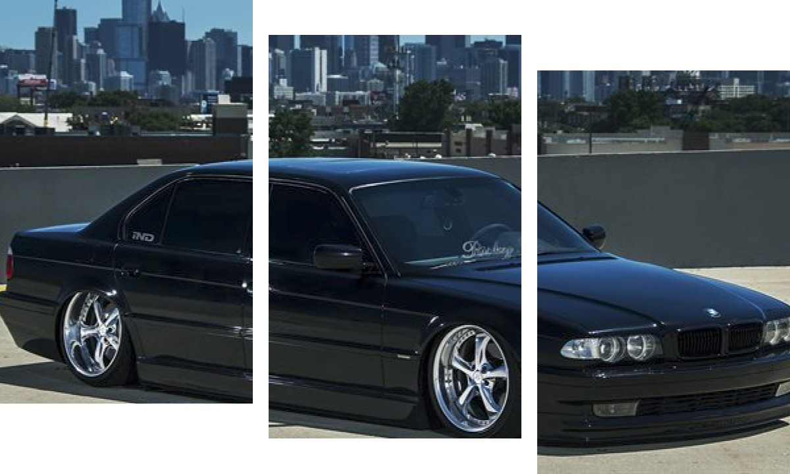
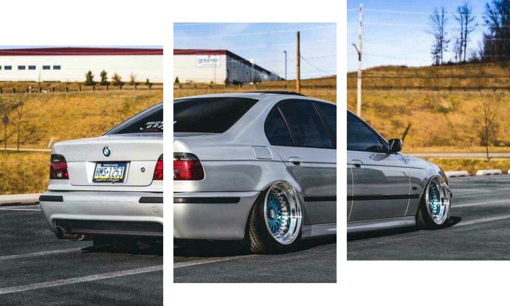

The E30 is one of the most iconic cars of the last three decades and cemented BMW as the perfect choice for a compact, rear-wheel-drive, performance coupe. It offered multiple body styles, engine choices, trim packages, and over 2.4 million were produced between 1982 and 1994.
BMW E38

The E38 7 Series is the third generation of BMW’s flagship, luxury car. The E23 and E32 before it had made a hell of an impression on the market and for BMW, business was booming. The thing is, the new car had to be nothing short of spectacular if was going to carry on this success. While the first incarnations of the 7 were indeed great cars, BMW had to be aware that businessmen are a fickle bunch, who would jump to a rival Audi or Merc in a heartbeat should the newest 7 not satisfy. The pressure was on, so the designers got penning. What they came up with was a car that looked incredible in mid ’90s and that also still looks great today – nearly 20 years later.
BMW E39

The BMW E39 is the fourth generation of BMW 5 Series, which was manufactured from 1995 to 2004. It was launched in the sedan body style, with the station wagon body style (marketed as "Touring") introduced in 1996. The E39 was replaced by the E60 5 Series in 2003, however E39 Touring models remained in production until May 2004. The proportion of chassis components using aluminium significantly increased for the E39, and it was the first 5 Series to use aluminium for all major components in the front suspension or any in the rear. It was also the first 5 Series where a four-cylinder diesel engine was available. Rack and pinion steering was used for four- and six-cylinder models, the first time that a 5 Series has used this steering system in significant volumes. Unlike its E34 predecessor and E60 successor, the E39 was not available with all-wheel drive. The high performance E39 M5 sedan was introduced in 1998, powered by a 4.9 L (299 cu in) DOHC V8 engine. It was the first M5 model to be powered by a V8 engine.